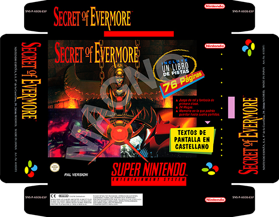

| 1. | Principal |
| 2. | Cajas y Manuales SNES |
| 3. | Proyectos |
| 4. | Documentación |
| 5. | Utilidades |
| 6. | Enlaces |
La idea es que la gente aporta fotos (sólo fotos pero a MUY buena
resolución) desde todos los ángulos de las cajas de los juegos que
tengan (una foto por cada lado, de las pestañas y de la parte frontal y
trasera donde se lea y vea claramente todo el texto), me las pasa, las
restauro con el Photoshop y las devuelvo junto con todas las que ya
tenga restauradas.
Por el momento tengo algunas ya "remasterizadas" por mí, como ésta que a
todos os sonará:

Secret of Evermore
Ésta la he reconstruido en base a fotos que he hecho a la caja original
más trozos de un póster que tenía de la Nintendo Acción.
CÓMO HACER LOS ESCANEOS:
* Los escaneos para los manuales los haremos a 150ppp y para las cajas a
300ppp; en ambos casos, la salida del escaneo serán fotos en PNG (sin
pérdidas) o JPG (en la máxima calidad posible, mínima compresión).
* Para escanear las cajas, lo haremos en 2 veces de la siguiente manera:
para el frontal:

para la trasera:

Si no queréis plegar la caja, entonces haremos los siguientes escaneos:
para el frontal (como antes):

para la trasera (con las solapas desplegadas):

{kind=link}
para la parte de abajo (con las pestañas desplegadas):

para la parte de arriba (sólo si fuera diferente de la de abajo):
* Todo esto se guarda como PNG o bien como JPG al máximo de calidad; lo
metéis todo en un RAR y me avisáis para ponernos de acuerdo en el método
más sencillo de envío (email, megaupload, ftp, torrent, etc). Luego yo
las maqueto para que queden limpias e imprimibles a 300 ppp.
* Para los manuales, se han de escanear abiertos a 150 ppp, ya que es
más cómodo, rápido y legible de esta manera. Tenéis que desactivar
cualquier opción del escáner que haga el encuadre y el recorte
automáticamente, porque a veces corta parte del texto o de gráficos por
error; este proceso lo hacemos manualmente nosotros más adelante. Cada
hoja queda de esta manera:
para la tapa:

para el resto de hojas:

* Estos escaneos los guardáis como JPG a máxima calidad posible y
entonces podéis enviarlas para que haga el resto de la maquetación yo, o
podéis hacer el PDF vosotros mismos siguiendo los pasos siguientes.
* Abrís las tapas en JPG en el Photoshop o el programa de edición que
más os guste; yo pondré los comandos que se usan en el Photoshop, que es
el que uso yo. Usáis la herramienta "Edit/Free Transform/Rotate" para
rotar la foto de modo que quede lo más recta posible (a veces durante el
escaneo ponemos el manual en el cristal y se gira un poco sin darnos
cuenta; este es el momento de corregirlo).
* Luego usáis la herramienta de selección para quedaros sólo con la
parte útil de las tapas, quitando todo el espacio vacío (normalmente en
blanco) que ha quedado en el escaneo. Lo que sobra lo borráis usando la
opción "Image/Crop" y entonces se nos queda en la imagen sólo las tapas.
* Guardáis como JPG las tapas y anotáis los valores de altura y anchura
(en cm) que aparecen en "Image/Image Size..."
* Abrís cada JPG con el resto de hojas y volvéis a repetir los pasos de
rotación (para dejar bien centradas las hojas), selección de la parte
útil y cropping para sólo quedarnos con ella.
* Antes de guardar, vais a "Image/Image Size..." y escribís los valores
de altura y anchura que tenían las tapas. De esta forma Photoshop escala
las hojas para que tengan TODAS el mismo tamaño y el PDF nos salga bien
alineado.
* Guardáis en el mismo formato JPG que las tapas.
* Cuando tengáis los JPG guardados y editados, podéis generar el PDF de
forma muy fácil con Photoshop. Vais a "File/Automation/PDF Presentantion..."
y en Browse seleccionáis del disco duro todas las JPGs con todo
el manual, tapas incluidas. La opción Multipage Document ha de
estar seleccionada. Le dáis a Save y en la siguiente ventana que
os aparece tenéis que seleccionar como perfil Press Quality y en
Compression seleccionar Medium.
* Si no tenéis el Photoshop o el vuestro no tiene esta opción, podéis
usar el CutePDF o cualquier otro programa de impresiora virtual que os
hace los PDF directamente. Para ello, enviáis a imprimir los JPG a esa
impresora y os crea un PDF que debería tener la misma calidad que las
fotos.
LISTA DE CAJAS
PAL ESPAÑA
* Terranigma


* Lufia


* Secret of Mana


* Secret of Evermore


* Killer Instinct


* Super Mario Kart


* Starwing


* Dragon Ball Z (falta la trasera y el lomo superior)
* Final Fight


* Super Mario World


* Donkey Kong Country

NTSC USA
* Chrono Trigger
EN PROYECTO
* Looney Toons
* Pilotwings
* Tetris & Dr. Mario
* Theme Park
* Donkey Kong Country
* Donkey Kong Country 2
* Donkey Kong Country 3
* Super Star Wars
* Chessmaster 2000
* Jurassic Park
* Megaman X
* Illusion of Time
* Stunt Racer FX
* Aladdin
* Super Mario All Stars
* FIFA 97
* Super Tennis
* Super Ghoul'n'Ghosts
* Dragon Ball Z 2
* El libro de la selva
* Sparkster
* Street Fighter 2 Turbo
* Magical Quest
* Tetris Attack
* UN Squadron
LISTA DE MANUALES
PAL ESPAÑA
* Lufia
* Terranigma, libro de pistas
y manual de instrucciones
* Illusion of Time
* Secret of Evermore (re-escaneado)
* Final Fight
* Stunt Race FX
* Chessmaster 2000
* Jurassic Park
* Tetris & Dr. Mario
* Super Star Wars
* Pilotwings
* Street Fighter II
* Super Mario World
* Starwing
* Looney Toons
* Secret of Mana
* Donkey Kong Country
* Donkey Kong Country 2
* Donkey Kong Country 3
* Super Mario All Stars
* FIFA 97
* Super Tennis
* Super Ghoul'n'Ghosts
* Tetris Attack
* UN Squadron
NTSC USA
* Chrono Trigger
* Secret of Mana (libro de pistas)
* Final Fantasy 3